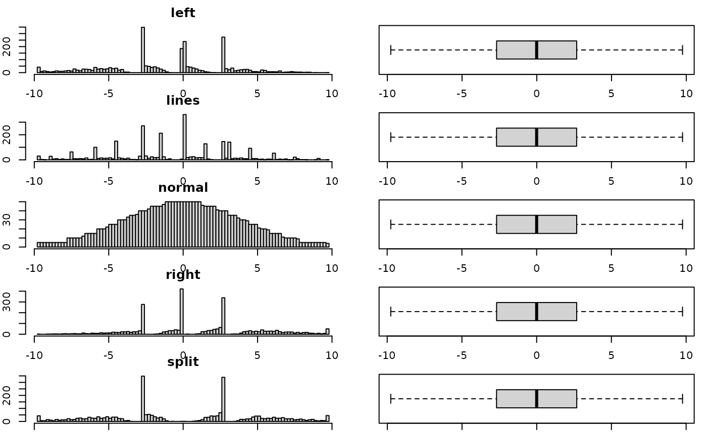
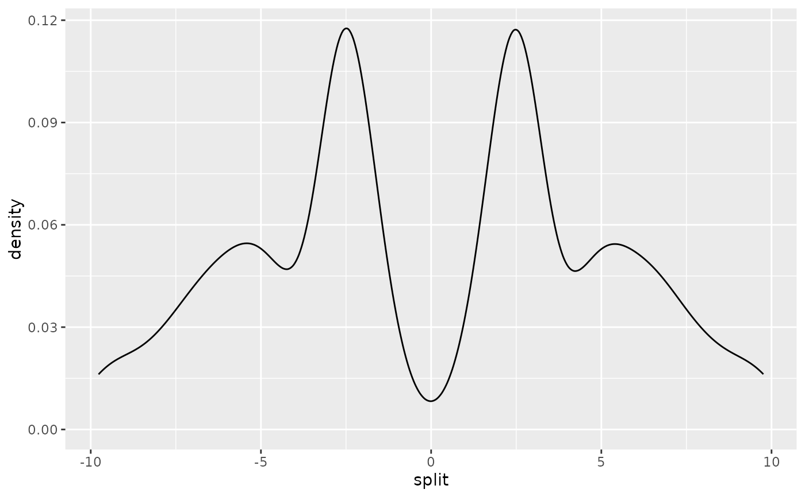

This dataset is the box plot data produced by Matjeka & Fitzmaurice to demonstrate applicability of their process.
Format
A data frame with 12420 rows and 2 variables:
Plot: either the left, lines, normal, right or split boxplot
Values: the corresponding values from each dataset
References
Matejka, J., & Fitzmaurice, G. (2017). Same Stats, Different Graphs: Generating Datasets with Varied Appearance and Identical Statistics through Simulated Annealing. CHI 2017 Conference proceedings: ACM SIGCHI Conference on Human Factors in Computing Systems. Retrieved from https://www.research.autodesk.com/publications/same-stats-different-graphs/. #nolint
Examples
summary(box_plots)
#> left lines normal right
#> Min. :-9.76964 Min. :-9.769575 Min. :-9.76 Min. :-9.760
#> 1st Qu.:-2.68999 1st Qu.:-2.689993 1st Qu.:-2.68 1st Qu.:-2.680
#> Median :-0.00999 Median :-0.007132 Median : 0.00 Median : 0.000
#> Mean :-1.17780 Mean :-0.831733 Mean : 0.00 Mean : 1.174
#> 3rd Qu.: 2.67007 3rd Qu.: 2.670236 3rd Qu.: 2.68 3rd Qu.: 2.680
#> Max. : 9.75025 Max. : 9.756001 Max. : 9.76 Max. : 9.760
#> split
#> Min. :-9.769886
#> 1st Qu.:-2.689989
#> Median :-0.003099
#> Mean :-0.003060
#> 3rd Qu.: 2.680000
#> Max. : 9.760000
## base plot
#save current settings
state = par("mar", "mfrow")
par(mfrow = c(5, 2), mar = c(1, 2, 2, 1))
nms = names(box_plots)
for (i in 1:5) {
nm = nms[i]
hist(box_plots[[nms[i]]],
breaks = 100,
main = nm)
boxplot(box_plots[[nms[i]]],
horizontal = TRUE)
}

#reset settings
par(state)
## ggplot
if (require(ggplot2)) {
ggplot(box_plots, aes(x = left)) +
geom_density()
ggplot(box_plots, aes(x = lines)) +
geom_density()
ggplot(box_plots, aes(x = normal)) +
geom_density()
ggplot(box_plots, aes(x = right)) +
geom_density()
ggplot(box_plots, aes(x = split)) +
geom_density()
}
